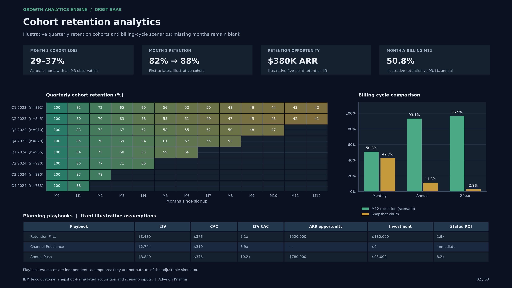
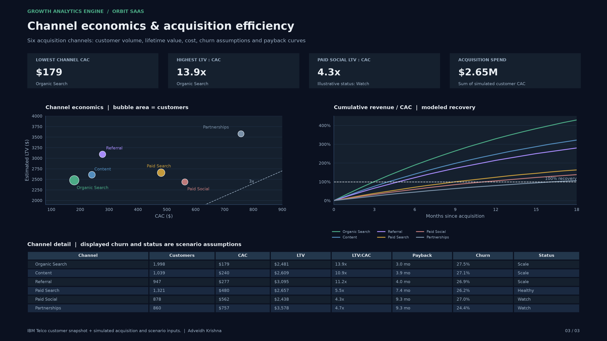
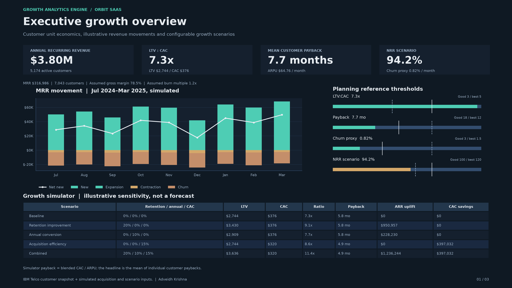

Growth Analytics Engine
Customer economics and explicit planning scenarios for a fictional subscription business. These Python-generated dashboards combine customer data with illustrative assumptions.
Repository and metric definitions
Cohort retention analytics

Channel unit economics

Executive growth overview
